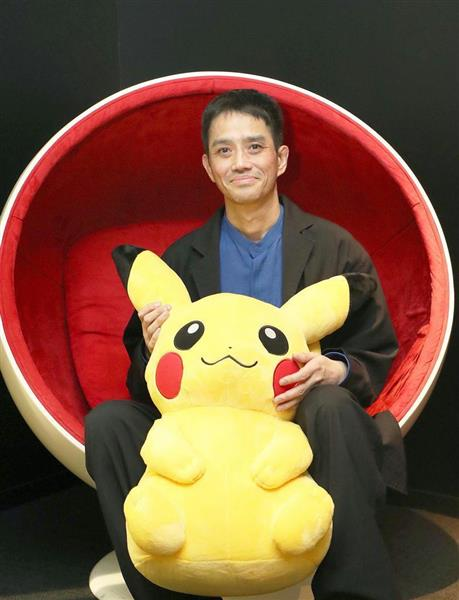

The Creator
A man by the name of Satoshi Tajiri, who in his early years as a young boy loved insects and exploring the outddors. Mainly collecting insects; hunting for them in ponds, fields, and forests. Always looking for new insects and coming up with new ways to capture them, which earned him the nickname "Dr. Bug" among his peers. Sadly, in the 1970s, the fields and ponds he loved as a child were paved over for different buildings and his passion for insects shifted to video games and arcades. Eventually, Tajiri graduated from a two-year program at the Tokyo National College of Technology. In 1981, when he was sixteen, he won a contest sponsored by Nintendo rival Sega for a game design concept. A year later, Tajiri and his friends formed a gaming magazine called Game Freak. As he learned more about games, he became more interested in making them. He learned how to write software by first taking apart a NES to see how it worked and then learning how to program it. In 1987, Tajiri published his first game, Quinty. Two years later, he officially founded the company Game Freak, named after his magazine.
